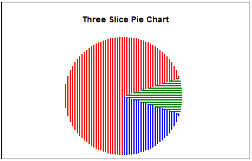

com.googlecode.gchart.client.GChart.SymbolType
com.googlecode.gchart.client.GChart.SymbolType
|
For downloads, demos, and more
visit the Client-side GChart Home Page |
||||||||
| PREV CLASS NEXT CLASS | FRAMES NO FRAMES | ||||||||
| SUMMARY: NESTED | FIELD | CONSTR | METHOD | DETAIL: FIELD | CONSTR | METHOD | ||||||||
java.lang.Object
public static class GChart.SymbolType
Specifies the type of symbol used by a curve. GChart includes a LINE symbol type (suitable for solidly connected line charts), various "box" symbol types (suitable for scatter and dotted-line charts), horizontal and vertical bars that extend to axis limits or a specified baseline (suitable for bar and area charts), and pie slices (suitable for pie charts) in these symbol types. Thus, choosing a curve's symbol type has a bigger impact on the kind of chart you create than in other charting APIs you may have used.
One advantage of this symbol type based approach: you can place multiple pies, lines and/or bars on a single chart simply by creating multiple curves whose associated symbols have appropriately different symbol types.
Note that, for line, area, or pie charts, the exact look of the non-rectangular aspects (connecting lines, filled-in areas, etc.) of these symbols in the chart is largely governed by the host Symbol's fillSpacing and fillThickness properties.
For instance, with the default fillThickness of 0 for the BOX_CENTER symbol, curves display only explicitly specified data points, without any connecting lines between them. But, if you set fillThickness to 1, GChart interpolates a series of 1 pixel by 1 pixel rectangular "dots" between successive data points, with an intra-dot spacing defined by the symbol's fillSpacing setting.
Since v2.5, a new fillSpacing==0 setting, with the special meaning of "continuous filling", is allowed. If an external canvas library has been plugged into GChart via setCanvasFactory, higher quality, continuously filled pie, line, and area charts can be produced via the combination: fillSpacing==0 and fillThickness > 0 along with one of the pie, line, or bar symbol types described below.
You must select each curve's symbol type from the predefined set of supported types listed in the "Field Summary" section below. The default symbol type is BOX_CENTER.
getSymbol,
setSymbolType,
setFillSpacing,
setFillThickness,
Symbol| Field Summary | |
|---|---|
static GChart.SymbolType |
ANCHOR_CENTER
Points on curves with this symbol type are positioned at the center of the plot area, and do not have a visible symbol. |
static GChart.SymbolType |
ANCHOR_EAST
Points on curves with this symbol type are positioned at the center of the right edge of the plot area, and do not have a visible symbol. |
static GChart.SymbolType |
ANCHOR_MOUSE
When passed to the setHoverAnnotationSymbolType method, this symbol type enables setTitle-like, "anchored at the mouse cursor" hover annotation positioning. |
static GChart.SymbolType |
ANCHOR_MOUSE_SNAP_TO_X
The same as the ANCHOR_MOUSE symbol type, except that the x coordinate of the rendered symbol is taken from the x coordinate of the point, rather than the x coordinate of the mouse. |
static GChart.SymbolType |
ANCHOR_MOUSE_SNAP_TO_Y
The same as the ANCHOR_MOUSE symbol type, except that the y coordinate of the rendered symbol is taken from the y coordinate of the point, rather than the y coordinate of the mouse. |
static GChart.SymbolType |
ANCHOR_NORTH
Points on curves with this symbol type are positioned at the center of the top edge of the plot area, and do not have a visible symbol. |
static GChart.SymbolType |
ANCHOR_NORTHEAST
Points on curves with this symbol type are positioned at the upper right corner of the plot area, and do not have a visible symbol. |
static GChart.SymbolType |
ANCHOR_NORTHWEST
Points on curves with this symbol type are positioned at the upper left corner of the plot area, and do not have a visible symbol. |
static GChart.SymbolType |
ANCHOR_SOUTH
Points on curves with this symbol type are positioned at the center of the bottom edge of the plot area, and do not have a visible symbol. |
static GChart.SymbolType |
ANCHOR_SOUTHEAST
Points on curves with this symbol type are positioned at the lower right corner of the plot area, and do not have a visible symbol. |
static GChart.SymbolType |
ANCHOR_SOUTHWEST
Points on curves with this symbol type are positioned at the lower left corner of the plot area, and do not have a visible symbol. |
static GChart.SymbolType |
ANCHOR_WEST
Points on curves with this symbol type are positioned at the center of the left edge of the plot area, and do not have a visible symbol. |
static GChart.SymbolType |
BOX_CENTER
Use rectangles horizontally and vertically centered on each point of the curve |
static GChart.SymbolType |
BOX_EAST
Use rectangles just to the right of, and vertically centered on, each point of the curve |
static GChart.SymbolType |
BOX_NORTH
Use rectangles just above, and horizontally centered on, each point of the curve |
static GChart.SymbolType |
BOX_NORTHEAST
Use rectangles just above, and to the right of, each point of the curve |
static GChart.SymbolType |
BOX_NORTHWEST
Use rectangles just above and to the left of, each point of the curve |
static GChart.SymbolType |
BOX_SOUTH
Use rectangles just below, and horizontally centered on, each point of the curve |
static GChart.SymbolType |
BOX_SOUTHEAST
Use rectangles just below, and to the right of, each point of the curve |
static GChart.SymbolType |
BOX_SOUTHWEST
Use rectangles just below, and to the left of, each point of the curve |
static GChart.SymbolType |
BOX_WEST
Use rectangles just to the left of, and vertically centered on, each point of the curve |
static GChart.SymbolType |
HBAR_BASELINE_CENTER
Use horizontal bars that extend from the x,y position associated with each point, to the x position defined by the host Symbol's baseline property, and that are vertically centered on the data point. |
static GChart.SymbolType |
HBAR_BASELINE_NORTH
Use horizontal bars that extend from the x,y position associated with each point, to the x position defined by the host Symbol's baseline property, and whose bottom edge passes through the data point. |
static GChart.SymbolType |
HBAR_BASELINE_SOUTH
Use horizontal bars that extend from the x,y position associated with each point, to the x position defined by the host Symbol's baseline property, and whose top edge passes through the data point. |
static GChart.SymbolType |
HBAR_EAST
Use horizontal bars that extend from the right y-axis to each point on the curve, and that are vertically centered on the point. |
static GChart.SymbolType |
HBAR_NEXT
Deprecated. As of version 2.4, this symbol has been redefined to be synonomous with the LINE symbol type. Prior to v2.4, this symbol drew a horizontal bar from each point to the x coordinate of the next point. Some applications may need to use a revised point set in order to produce the same curves using LINE that they used to produce with this symbol.
See the discussion within the |
static GChart.SymbolType |
HBAR_NORTHEAST
Use horizontal bars that extend from the right y-axis to each point on the curve, and that are vertically just above the point. |
static GChart.SymbolType |
HBAR_NORTHWEST
Use horizontal bars that extend from the left y-axis to each point on the curve, and that are vertically just above point. |
static GChart.SymbolType |
HBAR_PREV
Deprecated. As of version 2.4, this symbol has been redefined to be synonymous with the LINE symbol type. Prior to v2.4, this symbol drew a horizontal bar from each point to the x coordinate of the previous point. Some applications may need to use a revised point set in order to produce the same curves using LINE that they used to produce with this symbol.
See the discussion within the |
static GChart.SymbolType |
HBAR_SOUTHEAST
Use horizontal bars that extend from the right y-axis to each point on the curve, and that are vertically just below the point. |
static GChart.SymbolType |
HBAR_SOUTHWEST
Use horizontal bars that extend from the left y-axis to each point on the curve, and that are vertically just below the point. |
static GChart.SymbolType |
HBAR_WEST
Use horizontal bars that extend from the left y-axis to each point on the curve, and that are vertically centered on the point. |
static GChart.SymbolType |
LINE
This symbol type draws a continuous straight line between successive individual data points. |
static GChart.SymbolType |
LINE_CANVAS
Deprecated. In GChart 2.3, you had to use this special symbol type to get GChart to use an external canvas library to draw crisp connecting lines. As of GChart 2.5, the LINE symbol type will, by default, be rendered with whatever external canvas library you provide to GChart via the setCanvasFactory method. So now, LINE_CANVAS is just another name for LINE. Please replace LINE_CANVAS with LINE in your code. Note that LINE only draws continuous lines if fill spacing (setFillSpacing) is 0. With fill spacing > 0, it uses the old HTML-rendering method. Since 0 is now the new default fill spacing for the LINE symbol type, normally LINE works exactly like LINE_CANVAS did. But, if you had explicitly set the fill spacing, you may have to remove this specification, or set it to 0, to get the same behavior you had before with LINE_CANVAS.
|
static GChart.SymbolType |
NONE
A symbol type that does not draw any main symbol. |
static GChart.SymbolType |
PIE_SLICE_HATCHED_SHADING
Draws a pie slice whose area is shaded using both vertical and horizontal bars, which produces a "cross-hatched" pattern. |
static GChart.SymbolType |
PIE_SLICE_HORIZONTAL_SHADING
Draws a pie slice whose area is shaded using horizontal bars. |
static GChart.SymbolType |
PIE_SLICE_OPTIMAL_SHADING
Draw a pie slice whose area is shaded using either vertical bars or horizontal bars--whichever renders the slice more efficiently. |
static GChart.SymbolType |
PIE_SLICE_VERTICAL_SHADING
Draws a pie slice whose area is shaded using vertical bars. |
static GChart.SymbolType |
VBAR_BASELINE_CENTER
Use vertical bars that extend from the x,y position associated with each point, to the y position defined by the host Symbol's baseline property, and that are horizontally centered on the data point. |
static GChart.SymbolType |
VBAR_BASELINE_EAST
Use vertical bars that extend from the x,y position associated with each point, to the y position defined by the host Symbol's baseline property, and whose left edge passes through the data point. |
static GChart.SymbolType |
VBAR_BASELINE_WEST
Use vertical bars that extend from the x,y position associated with each point, to the y position defined by the host Symbol's baseline property, and whose right edge passes through the data point. |
static GChart.SymbolType |
VBAR_NEXT
Deprecated. As of version 2.4, this symbol has been redefined to be synonomous with the LINE symbol type. Prior to v2.4, this symbol drew a vertical bar from each point to the y coordinate of the next point. Some applications may need to use a revised point set in order to produce the same curves with LINE that they used to produce with this symbol. Support was dropped because:
Finally, note that if lines are vertical or horizontal, and solidly connected, LINE automatically collapses them into a single element, so no element-based efficiency losses need be associated with replacing curves using such rectilinear symbol types with equivalent curves rendered via the LINE symbol type. |
static GChart.SymbolType |
VBAR_NORTH
Use vertical bars that extend from the top of the chart to each point on the curve, and are horizontally centered on the point. |
static GChart.SymbolType |
VBAR_NORTHEAST
Use vertical bars that extend from the top of the chart to each point on the curve, and are horizontally to the right of the point. |
static GChart.SymbolType |
VBAR_NORTHWEST
Use vertical bars that extend from the top of the chart to each point on the curve, and are horizontally to the left of the point. |
static GChart.SymbolType |
VBAR_PREV
Deprecated. As of version 2.4, this symbol has been redefined to be synonomous with the LINE symbol type. Prior to v2.4, this symbol drew a vertical bar from each point to the y coordinate of the previous point. Some applications may need to use a revised point set in order to produce the same curves using LINE that they used to produce with this symbol.
See the discussion within the |
static GChart.SymbolType |
VBAR_SOUTH
Use vertical bars that extend from the x-axis to each point on the curve, and that are horizontally centered on the point. |
static GChart.SymbolType |
VBAR_SOUTHEAST
Use vertical bars that extend from the x-axis to each point on the curve, and that are horizontally to the right of the point. |
static GChart.SymbolType |
VBAR_SOUTHWEST
Use vertical bars that extend from the x-axis to each point on the curve, and that are horizontally to the left of the point. |
static GChart.SymbolType |
XGRIDLINE
Represents a single x-axis grid-line. |
static GChart.SymbolType |
Y2GRIDLINE
Deprecated. This symbol is the same as YGRIDLINE and was added by mistake in version 1. (the y-axis isn't defined by the symbol type, but rather by the curve's setYAxis method). Please use YGRIDLINE instead. |
static GChart.SymbolType |
YGRIDLINE
Represents a single y-axis (or y2-axis) grid-line. |
| Method Summary |
|---|
| Methods inherited from class java.lang.Object |
|---|
equals, getClass, hashCode, notify, notifyAll, toString, wait, wait, wait |
| Field Detail |
|---|
public static GChart.SymbolType ANCHOR_CENTER
Use this symbol type, along with the setAnnotationLocation, setAnnotationXShift and setAnnotationYShift methods, to position annotations relative to the center of the plot area.
Position isn't everything, but it matters: The (x,y) position of points on curves that employ one of these ANCHOR_* symbol types does not determine where the annotation is placed. But it could determine if that annotation gets clipped off the chart entirely. So if, as is frequently the case, you never want your anchored annotations clipped off, use (+/-Double.MAX_VALUE, * +/-Double.MAX_VALUE) as the coordinates of each annotatated point. Since GChart recognizes these special values as keywords the denote one of the corners of the plot area, the points associated with these annotations are always inside the plot area, and thus never clipped.
setAnnotationLocation,
setAnnotationXShift,
setAnnotationYShiftpublic static GChart.SymbolType ANCHOR_EAST
Use this symbol type, along with the setAnnotationLocation, setAnnotationXShift and setAnnotationYShift methods, to position annotations relative to the center of the right edge of the plot area.
setAnnotationLocation,
setAnnotationXShift,
setAnnotationYShift,
ANCHOR_CENTERpublic static GChart.SymbolType ANCHOR_MOUSE
Because this and its related symbol types, ANCHOR_MOUSE_SNAP_TO_X and ANCHOR_MOUSE_SNAP_TO_Y, are intended only to facilitate positioning of hover-induced pop-up annotations (via the setHoverAnnotationSymbolType method) I cannot imagine a scenario where it would make sense to use them as the symbol type of an ordinary, user defined, curve (if you find a use for this, please let me know).
ANCHOR_MOUSE_SNAP_TO_X,
ANCHOR_MOUSE_SNAP_TO_Y,
ANCHOR_CENTER,
setHoverLocation,
setHoverAnnotationSymbolType,
setHovertextTemplate,
setHoverXShift,
setHoverYShift,
setHoverWidgetpublic static GChart.SymbolType ANCHOR_MOUSE_SNAP_TO_X
ANCHOR_MOUSE,
ANCHOR_MOUSE_SNAP_TO_Ypublic static GChart.SymbolType ANCHOR_MOUSE_SNAP_TO_Y
ANCHOR_MOUSE,
ANCHOR_MOUSE_SNAP_TO_Xpublic static GChart.SymbolType ANCHOR_NORTH
Use this symbol type, along with the setAnnotationLocation, setAnnotationXShift and setAnnotationYShift methods, to position annotations relative to the center of the top edge of the plot area.
setAnnotationLocation,
setAnnotationXShift,
setAnnotationYShift,
ANCHOR_CENTERpublic static GChart.SymbolType ANCHOR_NORTHEAST
Use this symbol type, along with the setAnnotationLocation, setAnnotationXShift and setAnnotationYShift methods, to position annotations relative to the upper right corner of the plot area.
setAnnotationLocation,
setAnnotationXShift,
setAnnotationYShift,
ANCHOR_CENTERpublic static GChart.SymbolType ANCHOR_NORTHWEST
Use this symbol type, along with the setAnnotationLocation, setAnnotationXShift and setAnnotationYShift methods, to position annotations relative to the upper left corner of the plot area.
setAnnotationLocation,
setAnnotationXShift,
setAnnotationYShift,
ANCHOR_CENTERpublic static GChart.SymbolType ANCHOR_SOUTH
Use this symbol type, along with the setAnnotationLocation, setAnnotationXShift and setAnnotationYShift methods, to position annotations relative to the center of the bottom edge of the plot area.
setAnnotationLocation,
setAnnotationXShift,
setAnnotationYShift,
ANCHOR_CENTERpublic static GChart.SymbolType ANCHOR_SOUTHEAST
Use this symbol type, along with the setAnnotationLocation, setAnnotationXShift and setAnnotationYShift methods, to position annotations relative to the lower right corner of the plot area.
setAnnotationLocation,
setAnnotationXShift,
setAnnotationYShift,
ANCHOR_CENTERpublic static GChart.SymbolType ANCHOR_SOUTHWEST
Use this symbol type, along with the setAnnotationLocation, setAnnotationXShift and setAnnotationYShift methods, to position annotations relative to the lower left corner of the plot area.
setAnnotationLocation,
setAnnotationXShift,
setAnnotationYShift,
ANCHOR_CENTERpublic static GChart.SymbolType ANCHOR_WEST
Use this symbol type, along with the setAnnotationLocation, setAnnotationXShift and setAnnotationYShift methods, to position annotations relative to the center of the left edge of the plot area.
setAnnotationLocation,
setAnnotationXShift,
setAnnotationYShift,
ANCHOR_CENTERpublic static GChart.SymbolType BOX_CENTER
public static GChart.SymbolType BOX_EAST
public static GChart.SymbolType BOX_NORTH
public static GChart.SymbolType BOX_NORTHEAST
public static GChart.SymbolType BOX_NORTHWEST
public static GChart.SymbolType BOX_SOUTH
public static GChart.SymbolType BOX_SOUTHEAST
public static GChart.SymbolType BOX_SOUTHWEST
public static GChart.SymbolType BOX_WEST
public static GChart.SymbolType HBAR_BASELINE_CENTER
setBaseline,
HBAR_BASELINE_CENTER,
HBAR_BASELINE_SOUTH,
HBAR_BASELINE_NORTH,
VBAR_BASELINE_CENTER,
VBAR_BASELINE_EAST,
VBAR_BASELINE_WEST,
Symbolpublic static GChart.SymbolType HBAR_BASELINE_NORTH
setBaseline,
HBAR_BASELINE_CENTER,
HBAR_BASELINE_SOUTH,
HBAR_BASELINE_NORTH,
VBAR_BASELINE_CENTER,
VBAR_BASELINE_EAST,
VBAR_BASELINE_WEST,
Symbolpublic static GChart.SymbolType HBAR_BASELINE_SOUTH
setBaseline,
HBAR_BASELINE_CENTER,
HBAR_BASELINE_SOUTH,
HBAR_BASELINE_NORTH,
VBAR_BASELINE_CENTER,
VBAR_BASELINE_EAST,
VBAR_BASELINE_WESTpublic static GChart.SymbolType HBAR_EAST
public static GChart.SymbolType HBAR_NEXT
Prior to v2.4, this symbol drew a horizontal bar from each point to the x coordinate of the next point. Some applications may need to use a revised point set in order to produce the same curves using LINE that they used to produce with this symbol.
See the discussion within the VBAR_NEXT
symbol for more information about why support for these
vertically and horizontally constrained connecting line
symbol types was dropped.
LINE,
HBAR_PREV,
VBAR_PREV,
VBAR_NEXTpublic static GChart.SymbolType HBAR_NORTHEAST
public static GChart.SymbolType HBAR_NORTHWEST
public static GChart.SymbolType HBAR_PREV
Prior to v2.4, this symbol drew a horizontal bar from each point to the x coordinate of the previous point. Some applications may need to use a revised point set in order to produce the same curves using LINE that they used to produce with this symbol.
See the discussion within the VBAR_NEXT
symbol for more information about why support for these
vertically and horizontally constrained connecting line
symbol types was dropped.
LINE,
HBAR_NEXT,
VBAR_PREV,
VBAR_NEXTpublic static GChart.SymbolType HBAR_SOUTHEAST
public static GChart.SymbolType HBAR_SOUTHWEST
public static GChart.SymbolType HBAR_WEST
public static GChart.SymbolType LINE
Tip: You can get order-of-magnitude faster, and crisper, line charts by adding an external vector graphics library to GChart via the setCanvasFactory method.
Apart from this connecting line, the individual data points are displayed exactly as they would have been displayed via BOX_CENTER.
Produces a connecting line similar to what could be produced via BOX_CENTER with a fill spacing of 1px, except that it uses a more efficient representation that merges vertical or horizontal "dot blocks" into single HTML elements whenever possible.
To produce a line without showing the individual data points as separate rectangular symbols, set width and height to match your symbol's specified fillThickness.
BOX_CENTER,
setCanvasFactory,
setFillThicknesspublic static GChart.SymbolType LINE_CANVAS
As of GChart 2.5, the LINE symbol type will, by default, be rendered with whatever external canvas library you provide to GChart via the setCanvasFactory method.
So now, LINE_CANVAS is just another name for LINE. Please replace LINE_CANVAS with LINE in your code.
Note that LINE only draws continuous lines if fill spacing (setFillSpacing) is 0. With fill spacing > 0, it uses the old HTML-rendering method. Since 0 is now the new default fill spacing for the LINE symbol type, normally LINE works exactly like LINE_CANVAS did. But, if you had explicitly set the fill spacing, you may have to remove this specification, or set it to 0, to get the same behavior you had before with LINE_CANVAS.
LINE,
setCanvasFactory,
setFillSpacingpublic static GChart.SymbolType NONE
Equivalent to using the BOX_CENTER symbol type, but with the host symbol's width and height both set to zero, so that no box symbol is ever visible.
On Disabling hover selection feedback via NONE:
Note that if the border width of the host symbol is negative, consistent with a 0 x 0 px BOX_CENTER symbol type, an external border will still appear around the SymbolType.NONE symbol. Because the default hover selection border width is -1, when passing SymbolType.NONE to setHoverSelectionSymbolType, you generally will also need to add a code line such as:getCurve().getSymbol().setHoverSelectionBorderWidth(0);If your intention is to disable hover selection feedback, it's probably easier to just use setHoverSelectionEnabled(false), rather than setting the hover selection symbol type to NONE.
BOX_CENTER,
setFillThickness,
setHoverSelectionSymbolType,
setHoverSelectionEnabledpublic static GChart.SymbolType PIE_SLICE_HORIZONTAL_SHADING
The vertical distance between corresponding edges of successive bars is governed by the symbol's fill spacing property; the height of each bar is defined by the symbol's fill thickness property; the border and background of each shading bar are defined by the symbol's border color, border width, border style, and background color properties.
The radius of the pie slice (length of the non-arc sides of the slice) is chosen such that a circle with this radius circumscribes the host Symbol's width/height determined rectangle. The slice pivot point is defined by each point's x,y position, and the orientation and size of the slice by the corresponding properties (see links below) of the host Symbol.
setFillSpacing,
setFillThickness,
setBorderColor,
setBorderWidth,
setBackgroundColor,
setPieSliceOrientation,
setPieSliceSize,
setX,
setY,
PIE_SLICE_VERTICAL_SHADING,
PIE_SLICE_HATCHED_SHADING,
PIE_SLICE_OPTIMAL_SHADING,
Symbolpublic static GChart.SymbolType PIE_SLICE_VERTICAL_SHADING
The horizontal distance between corresponding edges of successive bars is governed by the symbol's fill spacing property; the width of each bar is defined by the symbol's fill thickness property; the border and background of each shading bar are defined by the symbol's border color, border width, and background color properties.
The radius of the pie slice (length of the non-arc sides of the slice) is chosen such that a circle with this radius circumscribes the host Symbol's width/height determined rectangle. The slice pivot point is defined by each point's x,y position, and the orientation and size of the slice by the corresponding properties (see links below) of the host Symbol.
setFillSpacing,
setFillThickness,
setBorderColor,
setBorderWidth,
setBackgroundColor,
setPieSliceOrientation,
setPieSliceSize,
setX,
setY,
PIE_SLICE_HORIZONTAL_SHADING,
PIE_SLICE_HATCHED_SHADING,
PIE_SLICE_OPTIMAL_SHADING,
Symbolpublic static GChart.SymbolType PIE_SLICE_HATCHED_SHADING
The distance between corresponding edges of successive bars is governed by the symbol's fill spacing property; the thickness of each bar is defined by the symbol's fill thickness property; the border and background of each shading bar are defined by the symbol's border color, border width, border style, and background color properties.
The radius of the pie slice (length of the non-arc sides of the slice) is chosen such that a circle with this radius circumscribes the host Symbol's width/height determined rectangle. The slice pivot point (i.e. pie center) is defined by each point's x,y position, and the orientation and size of the slice by the corresponding properties (see links below) of the host Symbol.
setFillSpacing,
setFillThickness,
setBorderColor,
setBorderWidth,
setBackgroundColor,
setPieSliceOrientation,
setPieSliceSize,
setX,
setY,
PIE_SLICE_VERTICAL_SHADING,
PIE_SLICE_HORIZONTAL_SHADING,
PIE_SLICE_OPTIMAL_SHADING,
Symbolpublic static GChart.SymbolType PIE_SLICE_OPTIMAL_SHADING
The distance between corresponding edges of successive bars is governed by the symbol's fill spacing property; the thickness of each bar is defined by the symbol's fill thickness property; the border and background of each shading bar are defined by the symbol's border color, border width, and background color properties.
The pie slice radius is always determined by the formula:
sqrt(symbolWidth ˆ 2 + symbolHeight ˆ 2) / 2
Here symbolWidth and symbolHeight are the pie slice symbol's width and height, in pixels.
Note that this formula implies that the pie slice radius is the one associated with the circle that circumscribes the symbol, that is, the smallest circle that is big enough to completely contain the symbol's width/height defined bounding rectangle. Equivalently, the length of the pie slice radius equals the half the length of the diagonal across the symbol's bounding rectangle.
To assure an integral number of shading bars and thus improve the visual look of the pie chart, GChart automatically rounds the radius to the nearest multiple of the specified fillSpacing. For example, if the radius computed from the above formula were 96 pixels and the fillSpacing were 10 pixels, GChart would actually use a radius of 100 pixels.
Tip: To produce a pie slice with a radius, r, set the symbol's height to 0, and its width to 2*r (or visa-versa). To specify the radius in pixels, use the symbol's setWidth and setHeight methods; to specify the radius in "model units" (which scale up or down with the chart dimensions) use setModelWidth and setModelHeight instead.
The slice pivot point (i.e. pie center) is defined by each point's x,y position, and the orientation and size of the slice by the setPieSliceOrientation and setPieSliceSize methods of the host Symbol.
Creating a pie chart from such pie slices requires that you define a separate curve for each slice, as illustrated in the code below:
package com.googlecode.gchart.gcharttestapp.client;
import com.googlecode.gchart.client.GChart;
/** A simple three slice pie chart */
public class GChartExample09 extends GChart {
GChartExample09() {
this.setChartSize(400, 200);
setChartTitle("<h3>Three Slice Pie Chart</h3>");
// Configure the plot region/axes appropriately:
getXAxis().setAxisVisible(false);
getXAxis().setAxisMin(-1);
getXAxis().setAxisMax(1);
getXAxis().setTickCount(0);
getYAxis().setAxisVisible(false);
getYAxis().setAxisMin(-1);
getYAxis().setAxisMax(1);
getYAxis().setTickCount(0);
// add first slice
addCurve();
getCurve().addPoint(0,0); // centers pie in -1..1 x,y range
getCurve().getSymbol().setSymbolType(SymbolType.PIE_SLICE_OPTIMAL_SHADING);
getCurve().getSymbol().setModelWidth(1);
getCurve().getSymbol().setModelHeight(0);
getCurve().getSymbol().setPieSliceSize(0.70);
// add second slice
addCurve();
getCurve().addPoint(0,0);
getCurve().getSymbol().setSymbolType(SymbolType.PIE_SLICE_OPTIMAL_SHADING);
getCurve().getSymbol().setModelWidth(1);
getCurve().getSymbol().setModelHeight(0);
getCurve().getSymbol().setPieSliceSize(0.10);
// add third slice
addCurve();
getCurve().addPoint(0,0);
getCurve().getSymbol().setSymbolType(SymbolType.PIE_SLICE_OPTIMAL_SHADING);
getCurve().getSymbol().setModelWidth(1);
getCurve().getSymbol().setModelHeight(0);
getCurve().getSymbol().setPieSliceSize(0.20);
}
}
Which produces this:

Note how, because PIE_SLICE_OPTIMAL_SHADING was used, vertical or horizontal shading is automatically selected so as to minimize the number of shading bars in each slice.
Symbol,
setFillSpacing,
setFillThickness,
setBorderColor,
setBorderWidth,
setBackgroundColor,
setPieSliceOrientation,
setPieSliceSize,
setWidth,
setHeight,
setModelWidth,
setModelHeight,
setX,
setY,
PIE_SLICE_VERTICAL_SHADING,
PIE_SLICE_HORIZONTAL_SHADING,
PIE_SLICE_HATCHED_SHADINGpublic static GChart.SymbolType VBAR_BASELINE_CENTER
Symbol,
setBaseline,
HBAR_BASELINE_CENTER,
HBAR_BASELINE_SOUTH,
HBAR_BASELINE_NORTH,
VBAR_BASELINE_CENTER,
VBAR_BASELINE_EAST,
VBAR_BASELINE_WESTpublic static GChart.SymbolType VBAR_BASELINE_WEST
Symbol,
setBaseline,
HBAR_BASELINE_CENTER,
HBAR_BASELINE_SOUTH,
HBAR_BASELINE_NORTH,
VBAR_BASELINE_CENTER,
VBAR_BASELINE_EAST,
VBAR_BASELINE_WESTpublic static GChart.SymbolType VBAR_BASELINE_EAST
setBaseline,
HBAR_BASELINE_CENTER,
HBAR_BASELINE_SOUTH,
HBAR_BASELINE_NORTH,
VBAR_BASELINE_CENTER,
VBAR_BASELINE_EAST,
VBAR_BASELINE_WESTpublic static GChart.SymbolType VBAR_NEXT
Prior to v2.4, this symbol drew a vertical bar from each point to the y coordinate of the next point. Some applications may need to use a revised point set in order to produce the same curves with LINE that they used to produce with this symbol.
Support was dropped because:
Finally, note that if lines are vertical or horizontal, and solidly connected, LINE automatically collapses them into a single element, so no element-based efficiency losses need be associated with replacing curves using such rectilinear symbol types with equivalent curves rendered via the LINE symbol type.
HBAR_PREV,
HBAR_NEXT,
LINE,
VBAR_PREVpublic static GChart.SymbolType VBAR_NORTH
public static GChart.SymbolType VBAR_NORTHEAST
public static GChart.SymbolType VBAR_NORTHWEST
public static GChart.SymbolType VBAR_PREV
Prior to v2.4, this symbol drew a vertical bar from each point to the y coordinate of the previous point. Some applications may need to use a revised point set in order to produce the same curves using LINE that they used to produce with this symbol.
See the discussion within the VBAR_NEXT
symbol for more information about why support for these
vertically and horizontally constrained connecting line
symbol types was dropped.
LINE,
HBAR_PREV,
HBAR_NEXT,
VBAR_NEXTpublic static GChart.SymbolType VBAR_SOUTH
public static GChart.SymbolType VBAR_SOUTHEAST
public static GChart.SymbolType VBAR_SOUTHWEST
public static GChart.SymbolType XGRIDLINE
public static GChart.SymbolType YGRIDLINE
public static GChart.SymbolType Y2GRIDLINE
Please use YGRIDLINE instead.
YGRIDLINE,
setYAxis
|
For downloads, demos, and more
visit the Client-side GChart Home Page |
||||||||
| PREV CLASS NEXT CLASS | FRAMES NO FRAMES | ||||||||
| SUMMARY: NESTED | FIELD | CONSTR | METHOD | DETAIL: FIELD | CONSTR | METHOD | ||||||||